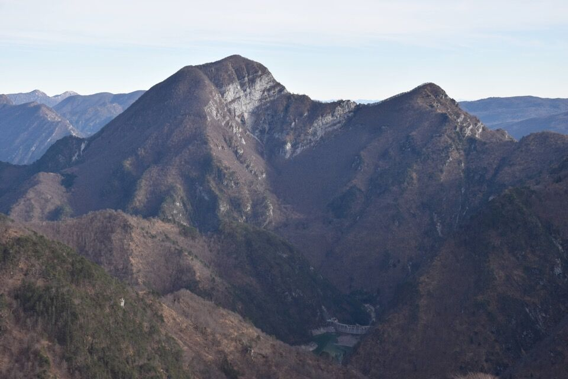

Già la prima volta che sono stato al lago del Ciul mi ha affascinato la visione di questa tozza cima, centrale nei canali di Meduna. Ho subito desiderato di trovarmi sui suoi cengioni boscosi e di osservare il lago del Ciul dall'alto.
Con Greta siamo andati a vedere, puntanto alle due cime segnate sulle mappe, anche in previsione di emozionanti progetti futuri.
A questo riguardo devo dire che generalmente, come zona geografica, sono più legato alla sinistra tagliamento, ma ogni tot mi viene la febbre da oltrepiave, che in qualche settimana mi passa...
Pessima foto prima dell'alba, verso la val Curta e le sue misteriose meraviglie.

In nostro monte ci dà il benvenuto.
Ci fermiamo ad ammirare l'alba su Maglìna e Dosaìp.

La passerella di Selis, da dove si entra nel Canal Grande di Meduna.

In qualche ora raggiungiamo il Forcellon (su cui avrei da dubitare sull'ubicazione del toponimo).
Dal Forcellon la visuale si apre: guardo in particolare Spiciòn e Rupàt, che guardavo già l'anno scorso e questo è quello buono (devo andarci, per avere buone foto della parte occidentale della Cengla da lis Fontanis).

Dal Forcellon, la Collina Alta con alla base la Cengla. Appuriamo che da questo versante c'è almeno un modo di superare la barriera di rocce e salire sulla pala di faggi e mughi che scende direttamente dalla cima. Decidiamo però di continuare fino al crinale di sx, anche se a posteriori ciò ci costerà la cima (ma pazienza).
Osservo per bene il versante Ovest del massiccio del Frascola, che finora avevo solo studiato sulle mappe.

La Cengla è proprio bella.

La vista dal crinale fra Collina Alta e Bassa ci esalta, con le Caserine ad un tiro di schioppo.
Proviamo a salire direttamente sulla cima Alta, ma un passaggio verticale su zolle ci convince poco; a posteriori si poteva provare con più convinzione e sicuramente ci si passava, ma sul momento decidiamo di continuare lungo la Cengla, incrociando le dita e andando in cerca di un passaggio (visto da foto fatte dal Dosaìp) che permetta di superare la fascia di rocce che divide la Cengla dalla pala di faggi che porta alla cima Alta.

Visuale più completa sulla zona della forca del Poul.
Alcune immagini della Cengla da lis Fontanis.


Della cengetta che mi pareva di vedere dal Dosaìp non c'è traccia, proviamo in vari modi ma niente da fare. Si poteva benissimo continuare a scendere, e dopo poco la fascia di rocce si sarebbe esaurita e le difficoltà svanivano, ma ormai è decisamente troppo tardi (d'altronde è Gennaio). Ma poco male: viaggio comunque estremamente istruttivo e di soddisfazione; la cima sarebbe stata solo la ciliegina sulla torta.
Povero chi nella Montagna ci vede solo cime.

Torniamo indietro. La Cengla è assai faticosa.

Le placconate delle Caserine in tutta la loro magnificenza.

Vista strepitosa, desideravo da tempo vedere il lago da quassù.

La Collina Bassa, sovrastata dalla dorsale del Corda, con evidenti le forcelle della Meda e degli Agnelli.
I piani originali erano di scendere in Collina Bassa e tornare al Forcellon mediante un cengione più basso. Ma chi ce lo fa fare?
Ragioniamo sul fatto che l'unico motivo per andarci sarebbe solo per poter dire di aver fatto la cima (!), al che ci convinciamo della stupidità di tale atteggiamento, ahimé assai diffuso, e conveniamo che questo è proprio un motivo per non andarci.
Ci andremo un'altra volta, su' po!
Sguardo verso Ovest, col Canal Piccolo di Meduna e la dorsale Le Ponte - Palasimòn che divide quest'ultimo dal Canal dal Vuâr.

Dimenticavo: versante Sud della Collina Alta.
La grande curva del Canal Grande; colpiscono i ripidi versanti meridionali del tratto Lastre di Peschis - Cimon d'Agâr.
La diga del Ciul sovrastata da Cuel da la Luna e Pizzo Lòvet.
Zoom sul poco simpatico versante Nord di forca de la Meda.

A rifare la stessa strada ci annoiamo, per cui caliamo direttamente in Canal Grande di Meduna dove reperiamo il sentiero basso, che io non avevo mai percorso ancora.

Alcun immagini dell'affascinante Canal Grande.
Il Ciuculòn: scruto da qualche parte la Cengla dai Alaçs.